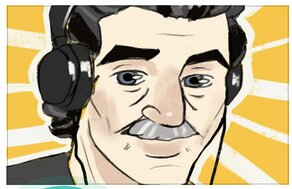

Sony пересмотрела прогноз по продажам PS VR2 на фоне малого числа предзаказов
В комментарии для GamesIndustry.biz Sony опровергла информацию о сокращении плана продаж PlayStation VR2. По словам её представителя, в компании «заметили радость фанатов по поводу предстоящего запуска шлема, вместе с которым свет увидит более 30 тайтлов».
Оригинальная новость. Помните, ранее мы писали, что за первый месяц продаж Sony намеревалась отгрузить внушительные 2 миллиона PlayStation VR2? Как сообщает Bloomberg, компании пришлось умерить аппетиты, так как предзаказывают гарнитуру не так охотно, как рассчитывали аналитики.
В итоге Sony значительно сократила план и собирается выпустить лишь миллион устройств в текущем квартале. А в период с апреля 2023-го по март 2024-го корпорация рассчитывает продать 1,5 миллиона шлемов. Эта цифра может измениться в зависимости от спроса. Компания также предупредила партнёра-поставщика об уменьшении будущих заказов на дисплеи для PS VR2.
По информации специалистов, интерес к виртуальной реальности растёт не так сильно, как думали производители. По большей части это связывают с отсутствием игр, которые могли бы продемонстрировать все возможности технологии.
Сама Sony ожидала, что релиз Horizon Call of the Mountain подстегнёт продажи PS VR2, но покупателей отпугивает цена девайса в 549 долларов. Более того, гарнитура работает только с PS5, и если консоли нет, придётся раскошелиться ещё на несколько сотен баксов. Из-за всех этих фактов аналитик Macquarie Capital Дэмиен Тонг (Damian Thong) предположил следующее: «PS VR2 останется не более чем дорогим аксессуаром для PS5».
Напомним, запуск PlayStation VR2 намечен на 22 февраля. В стартовую линейку входит множество игр, включая Hello Neighbor: Search and Rescue, Before Your Eyes и VR-режимы для Gran Turismo 7 и Resident Evil Village.

В Питере умер 73-летний ветеран игр Dark Souls
Дед, который играет в игры, редкость, а дед, который обожает Dark Souls, вообще феномен.
На 74 году жизни умер Николай Еремеев — пожилой ютубер из Санкт-Петербурга. Николай успел пройти все части Dark Souls, Nioh и Sekiro. На данный момент его канал Neolux Neolux активно раскручивает YouTube, сейчас там 18 тысяч подписчиков
О смерти Николая сообщили в его группе в VK. Также сообщалось о проблемах со спиной. Николай пережил тяжелую операцию на позвоночнике и, вероятно, испытывал боль, когда сидел за компьютером, но все равно продолжал играть.
Тираж всех частей «Ведьмака» превысил 50 миллионов копий
Уж не знаем, как так вышло, но в этом месяце минуло целых пять лет со дня релиза The Witcher 3: Wild Hunt. Сегодня CD Projekt RED сообщила, что вся серия «Ведьмак» разошлась по миру тиражом свыше 50 миллионов копий:
«Более 50 миллионов искателей приключений снова и снова присоединялись к Геральту в его путешествии из Каэр Морхена в Вызиму, через Флотзам и Верген, Велен и Новиград на острова Скеллиге, в Туссент и многие-многие другие места…
Спасибо и надеемся снова увидеться с вами на большаке!»
Напомним, что последняя часть трилогии о Геральте, «Дикая Охота», доступна на четырёх платформах — PC, PlayStation 4, Xbox One и Nintendo Switch. С октября 2018-го по февраль 2020-го одна только Steam-версия заработала более 50 миллионов долларов — в соответствии с правилами площадки Valve теперь CD Projekt получает 80 % выручки от продаж вместо 75.
В январе 2020-го «Ведьмак» пережил новый всплеск популярности — в частности, триквел обновил свой пик посещаемости, достигнув 103 тысяч одновременных пользователей. Причиной успеха стали не только новогодние праздники, но и декабрьская премьера сериала The Witcher от Netflix — шоу собрало у экранов десятки миллионов зрителей.
На этом ведьмачья история не заканчивается — Netflix трудится над вторым сезоном сериала и мультфильмом про Весемира, а CD Projekt явно планирует выпустить ещё одну игру по вселенной Анджея Сапковского (Andrzej Sapkowski).